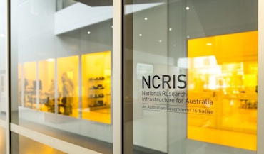
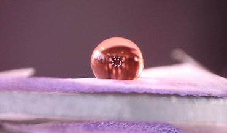
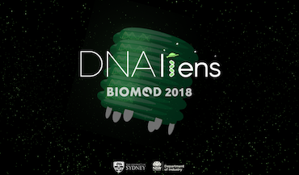

Meet Joseph
who loves nature & science.
Zhenxu (Joseph) Yang or 杨镇旭 received his Bachelor of Engineering (Hons Class I) in Biomedical Engineering and Bachelor of Science (Advanced, Chemistry) degrees from the University of Sydney in 2021.
Joseph's research lies at the interface of nano‑ and micro‑technology, where he employs microfluidic devices to gain insights into the impact of nanoparticles on cellular behaviors within organ‑on‑a‑chip systems.
Joseph is currently a Ph.D. candidate in Biomedical Engineering at the University of Sydney under the supervision of Profsessor Ken-Tye Yong. His research interests focus on nano-/micro-fabrication and the broader application of microfluidics, such as organ-on-a-chip, microfluidic biosensing, and microfluidic nanoparticle synthesis.
Recent involvement
Liver-on-a-chip for nanotoxicity assessment
At Professor Ken-Tye Yong's group, Joseph is developing an organ-on-a-chip platform, specifically liver-on-a-chip, to assess the impact of nanomaterials on cellular behaviours. This interdisciplinary project is aimed to develop a standard practice for designing organ-on-a-chio with the help of computational simulation combined with experimental validations.

High performance sensor for medical devices
At Professor Xiaoke Yi's group, Joseph conducted research in fields of analytical chemistry and organic chemistry. The interdisciplinary project is aimed to develop a non-invasive detection method for diabetes.

Study of Hydrophobic Surfaces
At Neto Research Group, Joseph explored the world of physical chemistry. In particular surface wettability and fluid dynamics.

BIOMOD Competition 2018
Joseph was a member of the USYD Biomod team 2018, where DNAliens won Gold project award, first place in presentation & third place in the video.
{kind=link}
{kind=link}
{kind=link}
{kind=link}